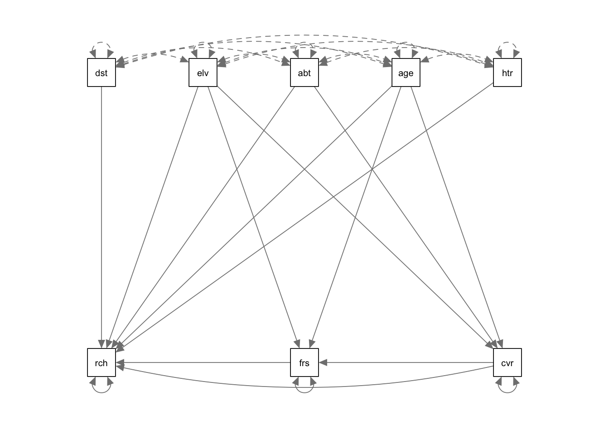

xAI aims at explaining how predictions are being made. In general, xAI != causality. xAI methods measure which variables are used for predictions by the algorithm, or how far variables improve predictions. The important point to note here: If a variable causes something, we could also expect that it helps predicting the very thing. The opposite, however, is not generally true - very often it is possible that a variable that doesn’t cause anything can predict something.
In statistics courses (in particular our course: Advanced Biostatistics), we discuss the issue of causality at full length. Here, we don’t want to go into the details, but again, you should in general resist to interpret indicators of importance in xAI as causal effects. They tell you something about what’s going on in the algorithm, not about what’s going on in reality.
13.1 Causal Inference on Static Data
Methods for causal inference depend on whether we have dynamic or static data. The latter is the more common case. With static data, the problem is confounding. If you have several correlated predictors, you can get spurious correlations between a given predictor and the response, although there is no causal effect in general.
Multiple regression and few other methods are able to correct for other predictors and thus isolate the causal effect. The same is not necessarily true for machine learning algorithms and xAI methods. This is not a bug, but a feature - for making good predictions, it is often no problem, but rather an advantage to also use non-causal predictors.
Here an example for the indicators of variable importance in the random forest algorithm. The purpose of this script is to show that random forest variable importance will split importance values for collinear variables evenly, even if collinearity is low enough so that variables are separable and would be correctly separated by an lm / ANOVA.
We first simulate a data set with 2 predictors that are strongly correlated, but only one of them has an effect on the response.
library(randomForest)
randomForest 4.7-1.1
Type rfNews() to see new features/changes/bug fixes.
set.seed(123)# Simulation parameters.n =1000col =0.7# Create collinear predictors.x1 =runif(n)x2 = col * x1 + (1-col) *runif(n)# Response is only influenced by x1.y = x1 +rnorm(n)
lm / anova correctly identify \(x1\) as causal variable.
summary(lm(y ~ x1 + x2))
Call:
lm(formula = y ~ x1 + x2)
Residuals:
Min 1Q Median 3Q Max
-3.0709 -0.6939 0.0102 0.6976 3.3373
Coefficients:
Estimate Std. Error t value Pr(>|t|)
(Intercept) 0.02837 0.08705 0.326 0.744536
x1 1.07383 0.27819 3.860 0.000121 ***
x2 -0.04547 0.37370 -0.122 0.903186
---
Signif. codes: 0 '***' 0.001 '**' 0.01 '*' 0.05 '.' 0.1 ' ' 1
Residual standard error: 1.011 on 997 degrees of freedom
Multiple R-squared: 0.08104, Adjusted R-squared: 0.0792
F-statistic: 43.96 on 2 and 997 DF, p-value: < 2.2e-16
How the random forest works - variables are randomly hidden from the regression tree when the trees for the forest are built.
Remember that as \(x1 \propto x2\), we can use \(x2\) as a replacement for \(x1\).
Remember that the variable importance measures the average contributions of the different variables in the trees of the forest.
13.2 Structural Equation Models
If causal relationships get more complicated, it will not be possible to adjust correctly with a simple lm. In this case, in statistics, we will usually use structural equation models (SEMs). Structural equation models are designed to estimate entire causal diagrams. There are two main SEM packages in R: For anything that is non-normal, you will currently have to estimate the directed acyclic graph (that depicts causal relations) piece-wise with CRAN package piecewiseSEM. Example for a vegetation data set:
library(piecewiseSEM)mod =psem(lm(rich ~ distance + elev + abiotic + age + hetero + firesev + cover,data = keeley),lm(firesev ~ elev + age + cover, data = keeley),lm(cover ~ age + elev + hetero + abiotic, data = keeley))summary(mod)plot(mod)
For linear structural equation models, we can estimate the entire directed acyclic graph at once. This also allows having unobserved variables in the directed acyclic graph. One of the most popular packages for this is lavaan.
library(lavaan)mod =" rich ~ distance + elev + abiotic + age + hetero + firesev + cover firesev ~ elev + age + cover cover ~ age + elev + abiotic"fit =sem(mod, data = keeley)summary(fit)
lavaan 0.6.15 ended normally after 1 iteration
Estimator ML
Optimization method NLMINB
Number of model parameters 16
Number of observations 90
Model Test User Model:
Test statistic 10.437
Degrees of freedom 5
P-value (Chi-square) 0.064
Parameter Estimates:
Standard errors Standard
Information Expected
Information saturated (h1) model Structured
Regressions:
Estimate Std.Err z-value P(>|z|)
rich ~
distance 0.616 0.177 3.485 0.000
elev -0.009 0.006 -1.644 0.100
abiotic 0.488 0.156 3.134 0.002
age 0.024 0.105 0.229 0.819
hetero 44.414 9.831 4.517 0.000
firesev -1.018 0.759 -1.341 0.180
cover 12.400 3.841 3.228 0.001
firesev ~
elev -0.001 0.001 -0.951 0.342
age 0.047 0.013 3.757 0.000
cover -1.521 0.509 -2.991 0.003
cover ~
age -0.009 0.002 -3.875 0.000
elev 0.000 0.000 2.520 0.012
abiotic -0.000 0.004 -0.115 0.909
Variances:
Estimate Std.Err z-value P(>|z|)
.rich 97.844 14.586 6.708 0.000
.firesev 1.887 0.281 6.708 0.000
.cover 0.081 0.012 6.708 0.000
The default plot options are not so nice as before.
library(lavaanPlot)lavaanPlot(model = fit)
Another plotting option is using semPlot.
library(semPlot)semPaths(fit)

13.3 Automatic Causal Discovery
But how to get the causal graph? In statistics, it is common to “guess” it and afterwards do residual checks, in the same way as we guess the structure of a regression. For more complicated problems, however, this is unsatisfying. Some groups therefore work on so-called causal discovery algorithms, i.e. algorithms that automatically generate causal graphs from data. One of the most classic algorithms of this sort is the PC algorithm. Here an example using the pcalg package:
library(pcalg)
Loading the data:
data("gmG", package ="pcalg") # Loads data sets gmG and gmG8.suffStat =list(C =cor(gmG8$x), n =nrow(gmG8$x))varNames = gmG8$g@nodes
First, the skeleton algorithm creates a basic graph without connections (a skeleton of the graph).
What is missing here is the direction of the errors. The PC algorithm now makes tests for conditional independence, which allows fixing a part (but typically not all) of the directions of the causal arrows.
When working with dynamic data, we can use an additional piece of information - the cause usually precedes the effect, which means that we can test for a time-lag between cause and effect to determine the direction of causality. This way of testing for causality is known as Granger causality, or Granger methods. Here an example:
library(lmtest)## What came first: the chicken or the egg?data(ChickEgg)grangertest(egg ~ chicken, order =3, data = ChickEgg)
Granger causality test
Model 1: egg ~ Lags(egg, 1:3) + Lags(chicken, 1:3)
Model 2: egg ~ Lags(egg, 1:3)
Res.Df Df F Pr(>F)
1 44
2 47 -3 0.5916 0.6238
grangertest(chicken ~ egg, order =3, data = ChickEgg)
As we have seen, there are already a few methods / algorithms for discovering causality from large data sets, but the systematic transfer of these concepts to machine learning, in particular deep learning, is still at its infancy. At the moment, this field is actively researched and changes extremely fast, so we recommend using Google to see what is currently going on. Particular in business and industry, there is a large interest in learning about causal effect from large data sets. In our opinion, a great topic for young scientists to specialize on.